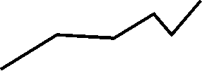
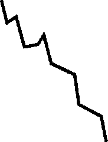
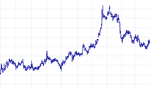
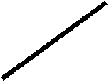
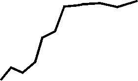

| Ethics Dictionary | Conditions Formulas | PTS Glossary | FAQs |
|
|
| Ethics Dictionary | Conditions Formulas | PTS Glossary | FAQs | |
Appendix
Use of Statistics
A Management tool
There is a game called PRODUCTION. It's a pro-survival game.
This is the game you play, in one form or
another, when you go to work or are part of an organized activity.
Obviously, if you are a salesman you are a better salesman the more you sell. If
you are a hunter you are a better hunter the more game you bring home.
Production and survival are closely related. In the physical universe you don't
survive for long unless you produce something that is right; you have to
do work to survive.
 |
Production and survival are |
This is not to say that production equals survival nor Ethics. Production is a much narrower scope. Production is sweating it out, not reflection. It does not 'consider all the Dynamics'. It does not consider the hard choices and it does not consider what you produce - only how much. In other words, when you measure production using statistics you are asking for numbers, not prior reasoning or ethical concerns. Immediate advantage and results will dominate. That said, using statistics in combination with the so-called Ethics Conditions are very applicable to the work situation as management tools. As we pointed out earlier, the origin of the Conditions was a study of organizations and they were defined as operating states.
Stats and the Admin Scale
The relationship between statistics, Ethics, production and survival, and
the proper use of statistics, is actually easy to sort out when you look at the Admin Scale.
Once an activity has gone through the whole Admin Scale and the Ideal Scene and
the Valuable Final Products are established using statistics makes a lot of sense.
Once you have a bakery the
baker that bakes more bread is the better one, the worker you want to hire or keep
if you run the activity.
In the following we thus assume that what you produce has already past the test of being useful and be needed and wanted as a valuable final product within that overall activity or society. Once that is established more is better. More is more pro-survival along the Dynamics. We can start to apply the Conditions Formulas to increase production and handle factors that impede production. We are in other words into some level of management, whether it is of our own affairs or include a whole organization with hundreds of workers whose production we are responsible for.
Using Statistics
The basic rules on how you use statistics to manage a production are simple.
It all starts with plotting your production on a graph. When you have done that
for a while you take a step back and look at the graph in order to see how you
are doing.
Here is a basic production graph:
|
Number |
 |
|
Timeline. Each line represents here one day. |
|
|
At the end of each day you count your production and
mark |
|
One thing to consider when making a graph is that the graph is properly scaled. The variations in production has to show up visually. If you made a graph of a salesman's sales of bread in 'millions of dollars per week' it would just be a straight line along the bottom of the graph paper and tell you nothing. If you made a graph of sales in dollars per week a difference between $1,000 and $3,000 would show up as a significant difference and you would have a graph you could work with. To get this right you may have to adjust the range you graph and what numerical units to use. If after a while it becomes clear the sales of bread is mainly between $500 and $2,000 you make sure your graph shows this range clearly and gives a clear picture of ups and downs in that range.
In order to use the Conditions Formulas in connection with production you have to look at the trend of the graph. The tend is the main direction of the overall graph or a section thereof. The trend is what tells you what Condition to apply. Another factor to consider, when reading a graph, is the time span to use. The closer and the more directly involved you are in the graphed production the shorter a time span you use.
You can monitor your personal production down to the hour. How many loaves of bread did you bake in the last hour? How many loaves of bread did you sell in the last hour?
A more usable trend may come about if you compare each day. After all there are supporting activities, such as cleaning, that have to be done in order to bake bread. Cleaning would not add up to baked loaves of bread but is part of the whole process. If you are responsible for the day to day operation it is relevant to see where you stand at the end of the day. You would add up the total number of loaves of bread baked; in sales you would simply add up the total sales.
If you are responsible on a senior level for an activity you would use a longer time span in order to determine the trend. You wouldn't micro-manage the activity but supervise it on a distance and only be ready to step in if a long range slump seems to set in. If you are the overall top manager of a large activity with many remote locations you would follow the statistics continuously, but you would not issue serious orders or start major programs to repair a slump unless you saw a trend developing over several months or longer. The key to determine how long a trend has to be to be actionable depends upon how long the remedies you are authorized to use would take to get communicated, working and completed. If you sit in New York and the production takes place in Vancouver you would only issue strategic orders. Not orders having to do with the day to day operation on a junior level. That is why the higher up you go in an organization the longer the trends are that you watch.
Here is how the trends relate to the Conditions. The Condition Formulas would tell you the general steps to take in an overall plan when seeking to remedy a bad situation or improve upon a favorable one. To apply the Conditions intelligently and effectively are what takes real genius in top administrators.
|
|
|
Steep or near vertical down: |
What is shown is the trend. If you have a statistic with many periods plotted it will of course not be a straight line but for instance look like this:
|
 |
|
A ten period graph showing a Non-Existence trend. |
The longer the period the more small ups and downs there will be. The day to day people would react to and seek to remedy the small ups and downs based on a short trend. The overall in charge at a remote location would only react to a trend becoming evident on a many moths' graph. He uses these long trends to work out a strategy for the company. He ignores the small ups and downs and assigns the Condition to use based on this long trend.
|
 |
|
A long range graph will have many ups and downs. |
Here are the rest of the trends:
|
|
|
Less down: |
|
|
|
Only slightly down: |
|
|
|
Slightly up: |
|
 |
|
Steeply up: |
A Power Condition graph cannot be determined as a straight line trend. It would start as an Affluence that at some point would level off at a new and higher level. It would only reveal itself after some time has gone by:
|
 |
|
Affluence leveling off at a higher level: |
For all this to work the statistics themselves have to be subject to review on a regular basis. If using a certain combination of statistics tend to neglect some vital functions to the overall health of a business it may be necessary to reconsider which statistics to use or give them different weight. Here we are into what top management has to consider. For "the man on the floor" it is usually obvious what he has to produce in order to keep his job or survive. It's not money but something he can exchange for money, goods and services. This is usually easy to express as a statistic and that is what he uses in his daily activities.
The stats will, besides giving him a tool to manage his own job by, also become something he can hold up to prove his worth to the company. This is his personal life insurance and a basic protection against injustices. Good managers give the good producers, the upstat people, more privileges and a little more freedom and will overlook any breakage of petty rules. They understand that the worker probably did it in order to get his work done and product completed. They will even consider it a reason to change the rules in general as a successful producer has shown what it takes. On the other hand a low producing worker, a downstat person, is not given such freedoms but is disciplined for only small infractions.
A person that has proven to cause statistics and production to rise consistently whatever he is made to do is a great asset to a company. He can be declared Kha Khan. This is an old title used by Ghengis Khan and others as an award or distinction given to warriors of great bravery. They were forgiven the death penalty ten times should they ever face a trial for their lives in the future.
|
|
|
|
End |